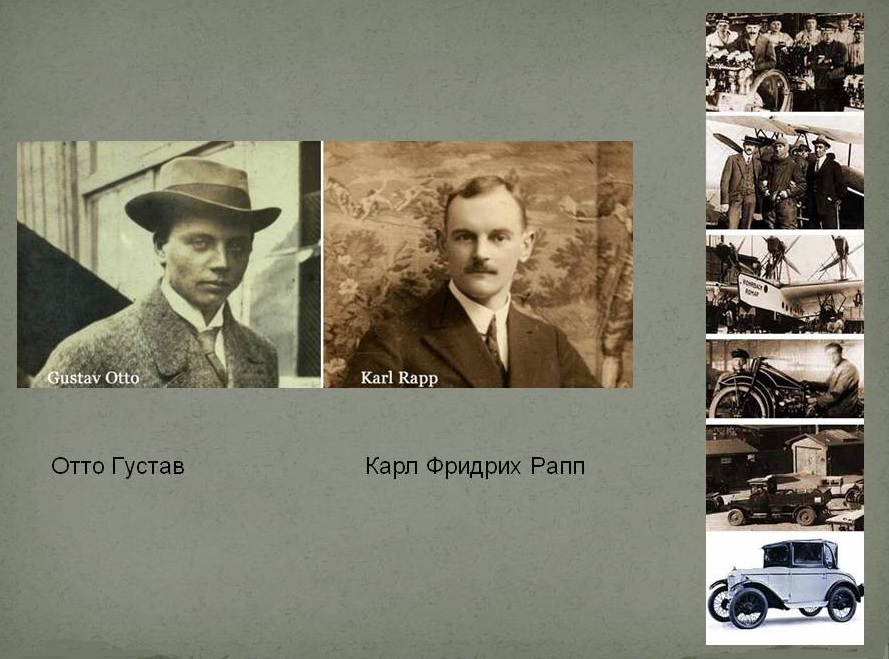

Добро пожаловать,на сайт посвященный истории компании BMW

Основатели компании BMW
Немножко истории
Немецкие автомобили известны своей функциональностью и практичностью во всем мире. Особенно выделяется марка BMW, которая производит не просто технологичные, но и по-настоящему роскошные машины. У нее достаточно интересная и непростая история, которая простирается на промежуток более чем в сто лет. Каждому поклоннику марки будет полезно ее узнать. Путь от производства авиационных моторов к изготовлению высокотехнологичных суперкаров восхищает.
Появление компании
Фирма БМВ располагается в Мюнхене. Здесь находится штаб-квартира, где происходят исследования и ведутся разработки. Начало истории тоже началось именно в этом городе. В 1913 Карл Рапп и Густав Отто открыли две маленькие фирмы с цехами на северных окраинах Мюнхена. Они специализировались на производстве авиамоторов. Маленькое предприятие плохо подходит для конкуренции на рынке, поэтому вскоре фирмы были объединены. Название для нового производства звучало как Bayerische Flugzeug-Werke, что означает «Баварские авиационные заводы». Основатель БМВ - Густав Отто - был сыном изобретателя двигателя внутреннего сгорания, да и Рапп знал толк в деле, поэтому предприятие обещало быть успешным.
Изменение концепции
В сентябре 1917 года была придумана легендарная бело-голубая эмблема круглой формы, до сих пор используемая БМВ. История создания отсылает к самолетному прошлому: рисунок символизирует самолетный винт, изображенный на фоне небесной синевы. Кроме того, белый и голубой являются традиционными цветами Баварии. Как уже упоминалось ранее, изначально концерн был создан для производства авиационных двигателей, не существовало даже современного названия БМВ. История марки пошла по другому пути после Первой мировой. По Версальскому договору, Германия не могла заниматься производством самолетов, и основателям пришлось перепрофилировать производство. Тогда бренд и получил новое название. Вместо авиации в центре появилось слово Motorische, ознаменовавшее начало производства техники другого типа. Под этим названием поклонники знают фирму и по сей день.
Мотоциклы бренда
Сначала завод начал выпускать тормоза для поездов. После этого появились мотоциклы БМВ: первый сошел с конвейера в 1923 году. Самолеты фирмы были ранее крайне успешны: одна из моделей даже побила рекорд высоты, поэтому закономерно, что и новое детище покорило публику. Мотосалон 1923 года в Париже стал его звездным часом: мотоциклы БМВ оказались надежными и скоростными, идеальными для участия в гонках. В 1928-ом основатели приобрели первые автозаводы в Тюрингии и решили заняться новым производством - производством машин. Но выпуск мотоциклов не прекращался, напротив, новые модели остаются востребованными и сегодня, просто автомобильная сфера куда более масштабна и потому важнее для развития концерна. Тем не менее поклонники бренда, предпочитающие экстремальную езду на двухколесном коне, следят именно за мотоциклами, и такое средство передвижения на дорогах - вовсе не редкость.
Появление характерных деталей
В 1933 году легковые автомобили БМВ были уже известны, но еще не стали легко узнаваемыми. Изменить ситуацию помогла модель 303. Этот автомобиль с мощным шестицилиндровым двигателем был дополнен характерной решеткой радиатора, которая в будущем станет типичным элементом дизайна марки. В 1936-ом мир узнал модель 328. Первые БМВ были обычными автомобилями, а эта машина стала прорывом в сфере спортивных авто. Ее появление помогло сформулировать концепцию бренда, актуальную и сейчас: «Автомобиль – для водителя». Для сравнения, главный немецкий конкурент - «Мерседес-Бенц» - следует идее «Автомобиль – для пассажиров». Этот момент стал ключевым для БМВ. История марки стала развиваться в ускоренном темпе, демонстрируя успех за успехом.
Период Второй мировой
Модель 328 стала победителем на гонках разных типов: ралли, кольцевых, состязаниях по подъему на холм. Сверхлегкие автомобили БМВ были триумфаторами итальянских соревнований и оставили позади все прочие бренды, существовавшие на тот момент. Все это привело к тому, что к моменту начала Второй мировой БМВ была самой известной и развитой фирмой в мире с ориентацией на спортивные модели. Двигатели баварского завода ставили рекорды. Мотоциклы и автомобили БМВ развивали невиданную прежде скорость. Но послевоенный период создал для концерна критические условия. Множество запретов на производство подорвали его экономическое положение. Карл Рапп решительно начал все с нуля и занялся созданием велосипедов и легких мотоциклов, которые собирались практически в кустарных условиях. Результатом поиска новых решений и механизмов стала первая послевоенная модель 501. Она не принесла успеха, но уже последующий вариант под номером 502 оказался куда более технологичным благодаря двигателю из сплава алюминия. Такой автомобиль пользовался невероятным спросом: он был маневренным, достаточно вместительным для своего времени и предлагался по доступной среднестатистическому немецкому покупателю цене.
Новое восхождение к вершине
В 1955-ом был налажен выпуск малолитражек под названием «Исетта». Это было одно из самых смелых творений концерна - смесь мотоцикла и машины на трех колесах, с дверью, открывающейся вперед. В бедной после войны стране доступный автомобиль произвел настоящий фурор. Но быстрый экономический рост привел к появлению спроса на крупные машины, и фирма снова оказалась под угрозой. Компания «Мерседес-Бенц» начала строить планы по покупке концерна, но этого не произошло. Уже в 1956 г. с конвейера сходит спортивная модель 507, созданная дизайнером Гертцем. Рынку было предложено несколько вариантов комплектации: с жесткой крышей и в формате родстера. Восьмицилиндровый двигатель с мощностью в сто пятьдесят лошадиных сил позволял машине разгоняться до двухсот двадцати километров в час. Удачная модель вернула фирме успех и до сих пор считается одним из самых лучших и дорогих коллекционных автомобилей. Деятельность компании БМВ, история которой включала уже несколько трудностей, снова продолжилась успешно.
Новые модели и классы автомобилей
Знак БМВ ассоциировался и с успехом, и с поражением. Начало шестидесятых не было для концерна безоблачным. Острый кризис после неудач с сектором крупных автомобилей сменился стабильностью после появления модели 700, впервые использующей воздушную систему охлаждения. Эта машина стала очередным крупным успехом и помогла концерну окончательно преодолеть трудный период. В версии купе такие автомобили БМВ помогли бренду вернуть и рекорды: спортивные победы оказались не за горами. В 1962-ом концерн выпустил модель нового класса, объединяющую в себе спортивный и компактный варианты. Это стало шагом к вершине мирового автомобилестроения. Концепция 1500 была принята с таким спросом, что производственные мощности попросту не позволяли вовремя поставлять новые машины на рынок. Успех нового класса привел к развитию модельного ряда: в 1966-ом был представлен двухдверный вариант 1600. За ним последовала успешная серия с турбонаддувом. Экономическая стабильность позволила концерну восстановить первые варианты БМВ. История моделей начиналась с шестицилиндровых двигателей, и в 1968 г. их выпуск начался снова. Публике были представлены 2500 и 2800, которые стали первыми седанами в линейке бренда. Все это сделало шестидесятые самым успешным периодом за всю предыдущую историю существования немецкого концерна, но впереди оставались многочисленные заслуженные триумфы и дальнейший рост.
Развитие в 70-е и 80-е
В год проведения в Мюнхене Олимпийских игр, а именно в 1972-ом, концерн разработал новые автомобили БМВ – уже пятую серию. Концепция была революционной: прежде марке лучше всего удавались спортивные автомобили, но новый подход позволил добиться успеха и в сегменте седанов. Модели 520 и 520i были представлены на автосалоне во Франкфурте. Новую машину отличали гладкие, вытянутые линии, большие окна и низкая посадка. Узнаваемый дизайн кузова разработал француз Поль Брак. Процесс деформации рассчитывали с помощью компьютерных технологий в концерне БМВ. История моделей этой серии продолжилась с выпуском 525 - первой модели комфортного седана с шестицилиндровым мотором, послушным и мощным, обладающим 145 лошадиными силами. Новая глава началась в 1975 году. Первые БМВ в сегменте компактных седанов в спортивном стиле были представлены в линейке с номером три. Стильный дизайн с характерным радиатором не нарушает компактный вид, при этом автомобиль смотрится крайне серьезно. Под капотом новинки расположились четырехцилиндровые двигатели новейших моделей, и уже через год ведущие специалисты назвали эту машину лучшей в мире. В 1976-ом в Женеве было представлено большое купе, к работе над которым снова привлекли Брака. Хищные очертания капота обеспечили новинке прозвище «акула». К началу восьмидесятых комплектация машин баварского концерна включала в себя новую антипробуксовочную систему и автоматические коробки, а также электрорегулировку сидений. Появилась седьмая серия с шестицилиндровым двигателем с впрыском. За два года было продано более семидесяти пяти тысяч моделей. Обновили третью и пятую серии, выпустив наиболее популярные варианты в новой комплектации. Высокая мощность, прекрасная аэродинамика, функциональная вместительность и возможность выбора вариантов двигателя и оформления кузова стали прекрасными способами усовершенствования успешных моделей. В 1985 году в свет вышел кабриолет. Технологической новинкой стала подвеска, позволяющая осуществлять комфортные путешествия на большие расстояния. К концу восьмидесятых концерн БМВ, история которого уже была известна всему миру, начал производство четырех новых моделей с бензиновыми моторами и электронным впрыском и одной на дизеле. Новый руководитель - одаренный дизайнер и просто талантливый управляющий Клаус Люте - смог добиться сохранения характерного вида с узнаваемыми деталями вроде радиаторной решетки, присутствующей в моделях на протяжении нескольких десятилетий, при постоянной его модернизации и воплотить самые актуальные технологические решения сразу в нескольких сериях, существующих в производственном ряду баварской фирмы.
Ход производства в 90-е
В 1990-ом был представлен очередной новый автомобиль от БМВ. История третьей серии включала взлеты и падения, но новинка определенно относилась к первым. Вместительный автомобиль покорил покупателей элегантностью и технологичностью. В 1992 году публике были представлены несколько купе с улучшенными двигателями с шестью цилиндрами. Через несколько месяцев появились новый кабриолет и спортивная модель M3. В середине десятилетия каждая появляющаяся в линейках концерна машина дополнялась уникальными деталями. Отзывы об автомобилях БМВ отмечали идеальное оснащение, соответствующее классу: в моделях были представлены климат- и круиз-контроль, они оснащались бортовыми компьютерами и электроуправлением стеклами и зеркалами, гидроусилителем руля и многим другим. В 1995-ом в модели пятой серии были внесены существенные изменения во внешнем виде: появились сдвоенные фары под прозрачным колпаком, а салон стал еще комфортнее и просторнее. Модель 5 Touring была выпущена в 1997 году и отличалась мультифункциональным рулем, активными сиденьями, навигацией и динамической стабилизацией. В следующем году ряд был дополнен дизельными вариантами с двигателями в шесть и восемь цилиндров, кроме того, их можно было заказать в удлиненных кузовах. Кроме того, модель Z3 появилась на экране в одном фильмов "Бондианы", и концерн снова столкнулся со спросом, превышающим производственную мощность.
Первый внедорожник БМВ
История создания многих моделей уходит далеко в прошлые десятилетия. Только внедорожники появились в линейках концерна относительно недавно – на стыке тысячелетий. Дебют спортивного автомобиля для активного отдыха, первого в истории автомобилестроения, произошел в 1999 году. В тот же период компания вернулась к гонкам "Формулы 1" и заявила о себе несколькими вариантами купе и универсала, а также представила авто для новой части "Бондианы".
Последний год двадцатого века стал по-настоящему рекордным по объемам продаж. Один только российский рынок отметил рост спроса на восемьдесят три процента. Новое тысячелетие началось для бренда премьерой модернизированной модели седьмой серии. БМВ 7 открыла новый горизонт для знаменитого баварского концерна и позволила ему претендовать на первое место в сегменте класса «люкс». Когда-то сфера представительских лимузинов своим развитием подорвала положение фирмы и привела его к худшему положению в истории: предприятие было на грани продажи. Теперь же авто БМВ покорили и ее, оставаясь безупречными рекордсменами и во всех остальных областях и продолжая бесконечную работу над улучшением и модернизацией, а также разработкой новых технологий, недоступных другим брендам по всему миру. Принцип «Автомобиль – для водителя» остается главным, на что ориентируются дизайнеры и инженеры концерна, что и обеспечивает популярность у покупателей: неповторимый комфорт движения оправдывает цену каждой из доступных моделей и покоряет все новых и новых автолюбителей. Регулярное появление новинок бренда на киноэкране позволяет привлечь внимание даже тех, кто все еще не оценил удивительную красоту и технологичность прославленных на весь мир немецких автомобилей.
![]()